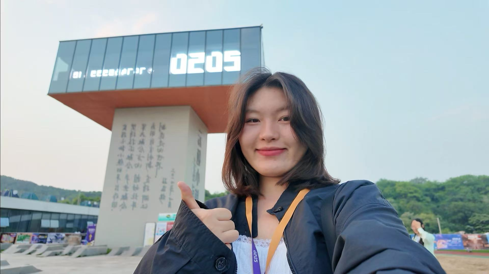
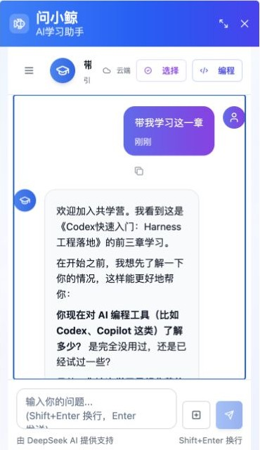
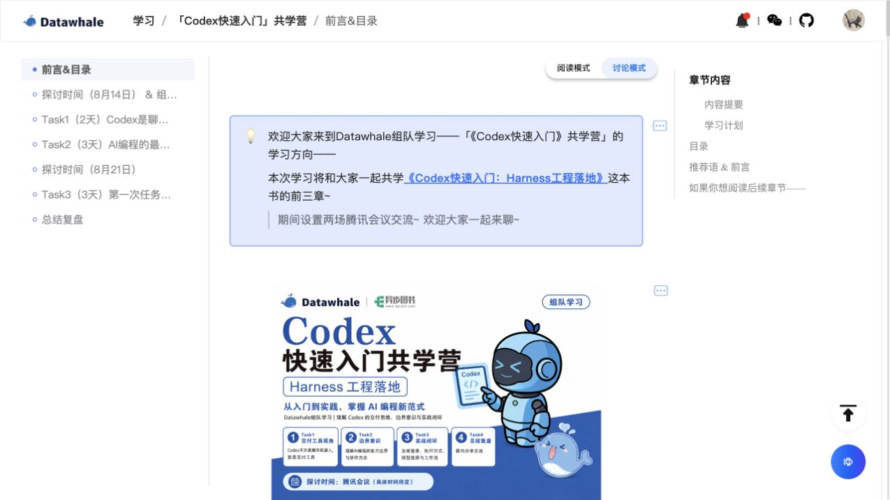
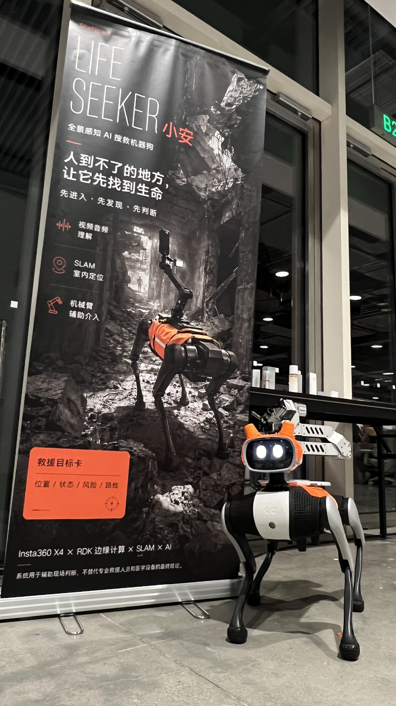
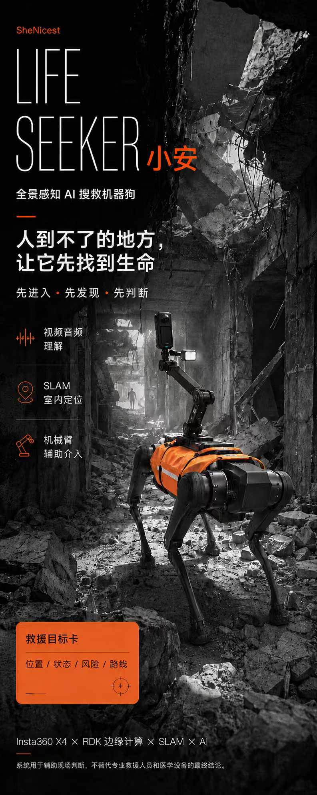
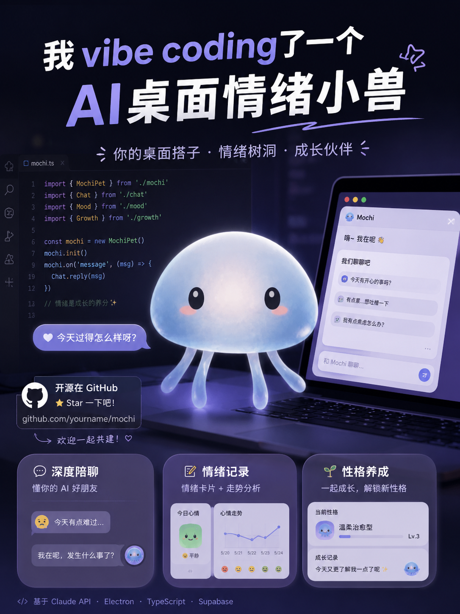

Hi,我是孜孜
AI 产品经理 · Agent 与大模型应用
从真实问题出发，
把模型能力转化为可验证的产品结果。
嗨，我是居丽德孜。我关注的不只是“AI 能做什么”，更在意它能否进入真实场景、推动用户完成下一步，并通过评测与业务结果验证价值。
AI Native
产品经理
3 段
Agent / 大模型应用实习
2 年
海外增长经验
黑客松第一
AI 产品✦上下文伴学✦多模态决策✦
海外增长✦独立产品✦把想法做出来✦
AI 产品✦上下文伴学✦多模态决策✦
海外增长✦独立产品✦把想法做出来✦
在读
香港城市大学硕士
2024.09 - 2026.11 · 可持续与发展研究
从可持续发展到产品，做正确且有长期价值的事情
在职
Datawhale AI 产品经理
2026.02 - 至今 · 问小鲸上下文伴学


带我学习这一章 · 线上实录
职业项目
Datawhale · AI 产品经理
问小鲸 AI Agent 产品升级
针对课程完课率低的问题，通过用研定位“运营长期重复低质量答疑、学习者缺乏及时有效卡点引导”两类核心成因，主导将问小鲸升级为课程内上下文伴学 Agent。
- 分层教学策略
- 结构化输出约束
- 多轮教学闭环
- P0/P1 评测回归
2.2 万 模块用户
+10.8% 完课率
团队项目
Shenicest 黑客松 · 产品负责人
多模态搜救机械犬“小安”
针对高危灾情中救援人员难以安全进入、传统视频存在视野盲区的问题，主导提出“机器狗 + 360°全景相机 + 多模态 AI”的先遣搜救方案。
YOLOv4 人员检测→Cohere 语音转写→3D 全景转 2D→决策辅助
端到端 演示闭环
第 1 名 / 100+ 队伍
获新华社客户端及张越视频号采访报道。


打开 Demo ↗
Mochi · 情绪小兽

从一个桌面陪伴想法，到能真实体验的情绪产品。
独立产品
从产品定义到可体验 Demo
Mochi 情绪小兽
面向长期独处年轻人的桌面常驻 AI 情绪陪伴产品。让情绪被记住，但不让用户觉得自己正在被分析。
“被陪伴，而不被分析。”
三层记忆 · 四层上下文 Prompt · 日 / 周 / 月叙事
教育履历
2024.09 - 2026.11
2022.08 - 2023.02
2019.09 - 2023.06
职业经历
2026.02 - 至今
Datawhale
AI 产品经理
主导问小鲸上下文伴学
主导将问小鲸从单轮问答升级为课程内上下文伴学 Agent，完成分层教学、结构化约束、多轮编排与评测回归闭环。
约 2.2 万模块用户
伴学用户完课率相对提升 10.8%
回看问小鲸项目 ↑
2024.12 - 2026.02
香港智感传媒
海外 AI 产品经理
推动增长产品化与服务提效
整合服务工具与 LLM 摘要、预警，重构新手引导并搭建活动模板。
客服响应 2h → 15min
首充转化 6% → 13%
活动上线 15 天 → 1 天
2024.06 - 2024.10
迅雷
产品经理
巴基斯坦区域语音房经营分析流程产品化
搭建“脚本拉数 → 异常预警 → LLM 摘要 → 群组推送”全链路，异常发现从 T+1 缩短到实时。
决策效率提升 30%
PRODUCT × AI
产品设计与 AI 应用
用户流程Figma 原型指标口径Prompt 设计
上下文组装固定场景评测bad case 归因上线验收
WORKBENCH
常用工具
FigmaClaude CodeCodexChatGPT
CursorGitHub CopilotGitHubSupabase
Ctrl+C / Ctrl+V：熟练；复制之前先判断，粘贴之后要验收。
LANGUAGE & PEOPLE
社会学 / 英语双学位
中文、English、哈萨克语都能聊；特殊语言技能：可与小猫小狗无痛交流。
ON STAGE
校级主持人
主持 20+ 场，单场最高 1000+ 人。
TEAM SPORT
CUBA 亚军
校女篮队员，司职大前锋；湖北省 CUBA 女子二级联赛亚军。
HIDDEN SKILL
扭脖子
新疆哈萨克族出厂配置。
“I think it's also important to reason from first principles, rather than by analogy.”
Elon Musk ↗